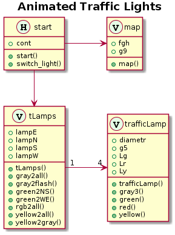

m2uml generates UML Class Diagrams .
I'm positive that some simple UML-diagrams could help us organizing our Matlab code. See UmlAsSketch by Martin Fowler.
Five years ago I started to make m2uml, which reverse engineer Matlab code to make a UML class diagram. I still run it from my unit testing framework. The main reason why I didn't complete it was that it provides to little control over the layout of the class diagram. It happens that a minor change in the input results in a major change in the layout of the diagram. However, now that might change: GraphViz is not good enough. That together with more than five hundred views of my five years old question on MATLAB Answers during the last thirty days triggered me to upload m2uml to File Exchange.
Contents
Requirements on m2uml .
- easy to keep the diagrams in sync with the code
- show the important information, i.e. deliberately incomplete
- show all dependencies between the displayed classes
- the diagrams shall be easy to read
m2uml in short .
- m2uml retrieves information from the code and from the Matlab meta.class object
- m2uml outputs code in a simple domain specific language of PlantUML
- PlantUML uses GraphViz to make the layout and
- PlantUML draws the class diagram
A list of classes is part of the m2uml input. This gives the user control of the scope of the diagram.
m2uml automatically generates the PlantUML code to depict the classes and the hierarchies of classes. Only the "subclassing-arrows" are added automatically.
Regarding other relations between the classes there are some different options. I've considered
- to extract information from the Matlab code
- PlantUML code fragments in the Matlab code
- PlantUML code as part of the m2uml input
Skipping the other relations is not an option. The two first options appear not to be feasible, considering that any given class will be included in diagrams of different degree of detail. Remains the third option.
The abstract class, handle, is not depicted explicitly. Instead handle-classes are tagged with a capital H in a circle. This often simplifies the diagram significantly.
The easy-to-read-requirement is where the diagrams that are generated by m2uml needs to be improved. The diagrams in a series of versions shall look similar. They shall easily be identified as belonging to the same series. However, adding (or removing) an entity will often change the layout of the entire diagram resulting in problems to recognize before and after as versions of the same diagram.
PlantUML .
PlantUML takes text as input and creates all important UML-diagrams. See PlantUML in a nutshell and PlantUML – Rendering textual UML diagrams PlantUML has an active web-site and many users. New releases appears regularly. See: A coffee with Arnaud Roques (creator of PlantUML)
The documentation of PlantUML is good and includes lots of examples. There is an on-line help and the PlantUML Language Reference Guide, which is a pdf-file.
There are alternatives to PlantUML, but I think I made a good choice five years ago.
How I currently use m2uml .
Some sketchy UML-diagrams helps me to put some real thought into the high level design and forget about Matlab functions and one-liners for a while. I've applied that seriously a few times and it definately helps me come up with better designs. I use PlantText and make only selected Class and Sequence diagrams. (Speculation: a function, uml2m, would keep me away from Matlab functions and one-liners even longer.)
The design process continuous in parallel with coding. m2uml comes into play when I have some code.
My use of m2uml is a bit clumsy:
- prepare Matlab code to call m2uml
- run m2uml to generate PlantUML code
- copy&paste the PlantUML code to PlantText running in my browser
- run PlantUML to produce a diagram (click the Refresh button of PlantText)
- modify the PlantUML code to improve the layout of the diagram and click Refresh
- copy&paste the modified lines back to the input of m2uml
- download the png-file
I assume this could be automated to some extent. However, because of the limitations of Graphviz it must be easy to "modify the PlantUML code" in a trial and error process.
Initially, I installed PlantUML, Graphviz and a PlantUML editor on my PC. Now, I don't think that's worth the trouble. However, the Integration with Eclipse looks nice.
Examples .
For this demo I've copy&pasted four examples from a testsuite. All of them are based on contributions to the File Exchange.
Prerequisites for running the examples in this script are
- m2uml is installed
- the File Exchange contributions, respectively, are installed
and the paths to the File Exchange contributions shall be edited to match your system
path_to_BN_Singleton = 'h:\m\FEX\oop\BN\Singleton'; path_to_BN_Iterator = 'h:\m\FEX\oop\BN\Iterator'; path_to_TrafficSigns = 'h:\m\FEX\oop\TrafficSigns'; path_to_youemel = 'h:\m\FEX\UML\youemel'; %
Singleton .
Design Pattern: Singleton (Creational)by Bobby Nedelkovski
addpath( path_to_BN_Singleton ) [~] = m2uml.run( 'BN_Singleton' ... , { 'Singleton' 'SingletonImpl' }, { } ); rmpath( path_to_BN_Singleton )
Iterator .
Design Pattern: Iterator (Behavioural) by Bobby Nedelkovski
addpath( path_to_BN_Iterator )
[~] = m2uml.run( 'BN_Iterator' ...
, {
'List'
'CellArrayList'
'Iterator'
'CellArrayListIterator'
}, {
'CellArrayList "1" <-left-o "1 " CellArrayListIterator : " "'
} );
rmpath( path_to_BN_Iterator )
Animated traffic lights .
This example exposed a fundamental problem. A Matlab program typically consists of a mixure of classes, functions and sometimes even scripts. Currently, m2uml only handles classes and will not catch depencencies between classes that occur via functions. For this example I transformed the script, start, to a class to make m2uml display it.
addpath( path_to_TrafficSigns )
[~] = m2uml.run( 'Animated Traffic Lights' ...
, {
'start_poi'
'map'
'trafficLamp'
'tLamps'
}, {
'start_poi -right-> map'
'start_poi -down-> tLamps'
'tLamps "1" -right-> "4" trafficLamp : " "'
} );
rmpath( path_to_TrafficSigns )

youemel .
youemel by Nicholas The "main" of the program is the funciton, youemel. I've transformed this function to a class, youemel_poi.
addpath( path_to_youemel )
[~] = m2uml.run( 'youemel' ...
, {
'youemel_poi'
'UmlClass'
'UmlDiagram'
'UmlDirectedRelationship'
'UmlGeneralization'
'UmlRelationship'
}, {
'youemel_poi --> UmlDiagram'
'UmlDiagram "1" -right-> "*" UmlClass'
'UmlDiagram "1" -left-> "*" UmlGeneralization : " "'
} );
rmpath( path_to_youemel )
Local installation of PlantUML .
A local installation of PlantUML may after all be worth the trouble. (I assume it's possible to use an on-line service automatically, I have not done it.) I made a local installation for two reasons.
- An issue with PlantUML, which I reported. In a couple of days I received a new version. PlantUML is indeed supported!
- Graphviz is needed to run youemel and I didn't find on-line support.
I made a function, m2uml.call_local_PlantUML, which creates a svg-file and displays the it in the Matlab Web Browser. Next, I tested this function with youemel by Nicholas
addpath( path_to_youemel )
m2uml.call_local_PlantUML ...
( 'Title' , 'youemel' ...
, 'Classes' , {
'youemel_poi'
'UmlClass'
'UmlDiagram'
'UmlDirectedRelationship'
'UmlGeneralization'
'UmlRelationship'
} ...
, 'Arrows' , {
'youemel_poi --> UmlDiagram'
'UmlDiagram "1" -right-> "*" UmlClass'
'UmlDiagram "1" -left-> "*" UmlGeneralization : " "'
} )
rmpath( path_to_youemel )